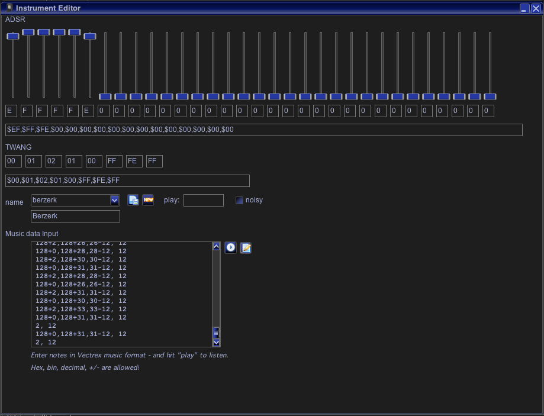

(The upper half of this text is the same as in Mod-Conversion/Instrument editor!)

Music editor
Here you can edit and experiment with the vectrex ADSR and TWANG tables. You can use the resulting data with mod file generation directly - or you can copy/paste the data to your own vecterx BIOS pieces and use them there - the format is identical.
There are 32 ADSR values which (provided the vectrex runs at 30000 cycles per update round) each represent a 0.02 seconds "piece" of a generated tone.
The values are "volumes" in the range from 0 (silence) to 15 (maximum volume). If within the "full" duration of the note (32*0.02) = 0.64 another sound is played, the ADSR will be chopped off - and the next note will start with its own ADSR range.
The Twang table are register frequency values (see Programmin the vectrex - sound), which are added to the PSG registers for the current channel (values range from -128 to + 127). This also "updates" each 0.02 seconds.
Regarding TWANG, some info:
the TWANG values are roll over, they start at their respective zero-value after the max value is used
the BIOS routine uses different roll over values (6, 7, 8 for channel 0,1,2), the modified MOD-player routine uses always 8 (since it uses different TWANG values for each channel)
the internal twang counter is always increased, whether a note is played or not
the internal twang counter always (continues), it is not "reset" by playing a new note
You can save the setting by giving a name and pressing the save button.
You can retrieve old setting via the checkbox.
You can use the keyboard to listen to the sound generated by the current setting. For that place the cursor in the textfield behind "play" and press keyes.
With the checkbox you enable noise generation.
In the large text area you can enter music notes as the BIOS expects. You can use + / * - to calculate values you can enter data with or without DB statements. Hitting the "play" button generates a vectrex program and runs that program in the emulator - so you can listen directly to your original music.
If you want you can also view the generated sourcecode in Vide.
Notice:
You have to also select the instrument that should play the music - otherwise you will not hear it playing.